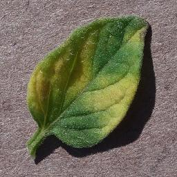

Tomato Malato
Carica l'immagine delle foglie della pianta
Tipi di malattie che possono colpire i pomodori
Macchia fogliare batterica
Peronospora precoce
Peronospora tardiva

Muffa delle foglie
Muffa polverosa
Macchia fogliare della Septoria
Macchia target
Virus del mosaico
Virus dell'arricciamento fogliare giallo
Macchia fogliare batterica
- Sintomi di danno:
- Il clima umido e le piogge a pioggia favoriscono lo sviluppo della malattia. La maggior parte dei focolai della malattia può essere ricondotta ai forti temporali che si verificano nella zona.
- Le foglie infette presentano piccole macchie circolari brune, impregnate d'acqua e circondate da un alone giallastro.
- Sulle piante più vecchie l'infezione fogliare riguarda soprattutto le foglie più vecchie e può causare gravi defogliazioni.
- I sintomi più evidenti si manifestano sui frutti verdi. All'inizio compaiono piccole macchie imbevute d'acqua, che in seguito si sollevano e si ingrandiscono fino a raggiungere un diametro di un ottavo o un quarto di pollice.
- I centri di queste lesioni diventano irregolari, di colore marrone chiaro e leggermente infossati, con una superficie ruvida e scabbiosa.
- I frutti maturi non sono sensibili alla malattia. La superficie del seme si contamina con il batterio, che rimane sulla superficie del seme per qualche tempo.
- L'organismo sopravvive in ospiti alternativi, su piante di pomodoro volontarie e su detriti vegetali infetti.
- Sopravvivenza e diffusione:
- Primaria: le cellule batteriche sopravvivono su detriti vegetali e semi infetti (sia internamente che esternamente) e anche su piante infestanti solanacee come Solanum nigrum.
- Secondaria: le cellule batteriche si trasmettono attraverso gli spruzzi di pioggia.
- Condizioni favorevoli:
- Tempo umido e piogge a spruzzo
- Elevata umidità o rugiada persistente.
Peronospora precoce
- Sintomi di danno:
- È una malattia comune del pomodoro che si manifesta sul fogliame in qualsiasi fase della crescita.
- Il fungo attacca il fogliame causando le caratteristiche macchie fogliari e la peronospora. La peronospora precoce si osserva per la prima volta sulle piante come piccole lesioni nere, per lo più sul fogliame più vecchio.
- Le macchie si ingrandiscono e quando raggiungono un diametro di un quarto di pollice o più, al centro dell'area malata si notano anelli concentrici a forma di occhio di bue.
- Il tessuto che circonda le macchie può ingiallire. Se in questo periodo si verificano temperature e umidità elevate, gran parte del fogliame viene ucciso.
- Le lesioni sui fusti sono simili a quelle sulle foglie e a volte avvolgono la pianta se si verificano vicino alla linea del suolo.
- I trapianti infettati dal fungo della peronospora tardiva spesso muoiono quando vengono messi in campo. Il fungo infetta anche i frutti, generalmente attraverso il calice o l'attaccatura dello stelo.
- Le lesioni raggiungono dimensioni considerevoli, di solito coinvolgono quasi tutto il frutto; sul frutto sono presenti anche anelli concentrici.
- Sopravvivenza e diffusione:
- Primaria: il fungo trascorre l'inverno in detriti vegetali infetti all'interno o sul terreno, dove può sopravvivere per almeno uno e forse più anni. Può anche essere trasportato dai semi.
- Secondaria: le spore sono trasportate da acqua, vento, insetti, altri animali, compreso l'uomo, e macchinari. Una volta che le infezioni iniziali si sono verificate, diventano la fonte più importante di produzione di nuove spore e sono responsabili della rapida diffusione della malattia.
- Condizioni favorevoli:
- Clima caldo, piovoso e umido
Peronospora tardiva
- Sintomi e danno
- La peronospora tardiva è una malattia potenzialmente grave della patata e del pomodoro ed è causata dall'agente patogeno Phytophthora infestans.
- La peronospora tardiva è particolarmente dannosa quando il tempo è fresco e umido.
- Questo patogeno può colpire tutte le parti della pianta.
- Le lesioni delle foglie giovani sono piccole e si presentano come macchie scure e impregnate d'acqua.
- Queste macchie fogliari si allargano rapidamente e ai margini dell'area colpita compare una muffa bianca sulla superficie inferiore delle foglie.
- La defogliazione completa (imbrunimento e raggrinzimento di foglie e steli) può avvenire entro 14 giorni dai primi sintomi.
- I frutti di pomodoro infetti sviluppano lesioni lucide, scure o color oliva, che possono coprire ampie aree.
- Le spore fungine si diffondono tra le piante e i giardini con la pioggia e il vento.
- Una combinazione di temperature diurne superiori ai 70° C e di umidità elevata è ideale per l'infezione.
- Prevenzione e trattamento:
- Mantenere il fogliame asciutto. Posizionare il giardino in modo che riceva il sole del mattino.
- Lasciate un po' di spazio tra le piante ed evitate di annaffiare dall'alto, soprattutto in tarda mattinata.
- Acquistate semi e piante certificate esenti dalla malattia.
- Distruggete le piante di pomodoro e di patata spontanee e le piante infestanti della famiglia della belladonna, come il cavallino della Carolina o la belladonna nera, che possono ospitare il fungo.
- Non compostate le patate marce acquistate in negozio.
- Estraete e distruggete le piante malate.
- Se la malattia è abbastanza grave da giustificare un controllo chimico, scegliete uno dei seguenti fungicidi: clorotalonil (molto buono), fungicida a base di rame o mancozeb (buono). Vedere la Tabella 1 per esempi di prodotti fungicidi per uso domestico. Seguite le indicazioni riportate sull'etichetta.
- Piantare cultivar resistenti.
Muffa fogliare
- Sintomi di danno:
- Il fungo Passalora fulva causa la muffa fogliare.
- Si osserva per la prima volta sulle foglie più vecchie vicino al terreno, dove il movimento dell'aria è scarso e l'umidità è elevata.
- I sintomi iniziali sono macchie verde pallido o giallastre sulla superficie superiore della foglia, che si allargano e assumono un caratteristico colore giallo.
- In condizioni di umidità, le macchie sulla superficie inferiore delle foglie si ricoprono di una crescita grigia e vellutata delle spore prodotte dal fungo.
- Quando l'infezione è grave, le macchie si uniscono e il fogliame muore. Occasionalmente, il fungo attacca steli, fiori e frutti. I frutti verdi e maturi possono presentare un marciume nero e coriaceo all'estremità dello stelo.
- Sopravvivenza e diffusione:
- Il fungo sopravvive sui residui colturali e nel terreno.
- Le spore si diffondono con la pioggia, il vento o gli attrezzi.
- I semi possono essere contaminati.
- Il fungo dipende da un'elevata umidità relativa e da temperature elevate per lo sviluppo della malattia.
- Condizioni favorevoli:
- I residui colturali devono essere rimossi dal campo. I pali e le potature per aumentare la circolazione dell'aria aiutano a controllare la malattia. Distanziare maggiormente le piante di pomodoro per favorire la circolazione dell'aria tra le piante. Evitare di bagnare le foglie quando si annaffia. Effettuare la rotazione con ortaggi diversi dal pomodoro. L'uso di un programma fungicida preventivo con clorotalonil, mancozeb o rame può controllare la malattia. Vedere la Tabella 1 per i prodotti fungicidi da utilizzare negli orti domestici.
Muffa polverosa
- Sintomi di danno:
- Sopravvivenza e diffusione:
- Primaria:
- Secondaria:
- Condizioni favorevoli:
Macchia fogliare della Septoria
- Sintomi di danno:
- Sopravvivenza e diffusione:
- Primaria:
- Secondaria:
- Condizioni favorevoli:
Ragnetto rosso
- Sintomi di danno:
- Sopravvivenza e diffusione:
- Primaria:
- Secondaria:
- Condizioni favorevoli:

Macchia target
- Sintomi di danno:
- Sopravvivenza e diffusione:
- Primaria:
- Secondaria:
- Condizioni favorevoli:
Virus del mosaico
- Sintomi di danno:
- Sopravvivenza e diffusione:
- Primaria:
- Secondaria:
- Condizioni favorevoli:
Virus dell'arricciamento fogliare giallo
- Sintomi di danno:
- Sopravvivenza e diffusione:
- Primaria:
- Secondaria:
- Condizioni favorevoli: